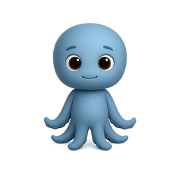
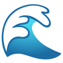

não
gosto

Escolhe um minijogo
ou consulta as dicas de apoio abaixo!

Teste aos Botões Vibrantes!
Clica nos botões abaixo para veres o impacto das cores fortes no acerto e no erro.
Nível Completo!
Estás a ir muito bem!
Missão Cumprida!
Completaste os testes!
Tiveste 0 erros.
Tiveste 0 erros.